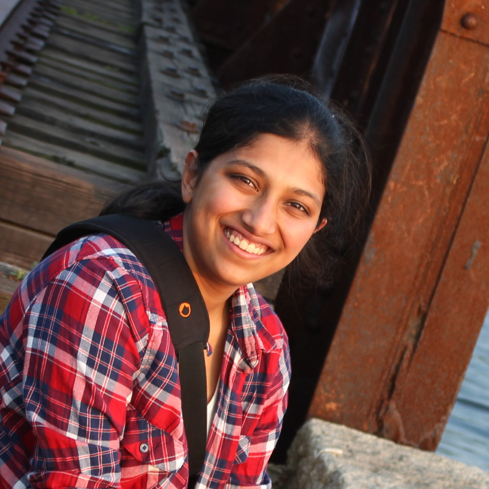

- Email: sd592[at]exeter.ac.uk
- Office: Innovation Centre, J1
- Address:
- Mathematics (CEMPS)
- University of Exeter
- North Park Road
- Exeter
- EX4 4QF
I am a first year PhD student at the University of Exeter. I am part of the Centre for Systems, Dynamics and Control, under the supervision of Mark Holland. I am interested in ergodic theory, dynamical systems and fractal geometry. My research is funded by EPSRC.